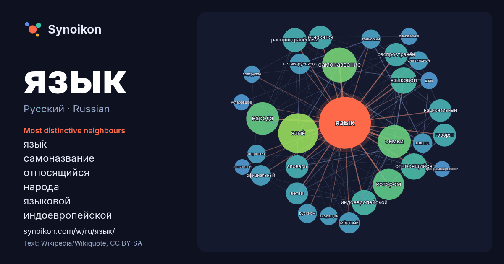

Русский · Russian · popular word
язык
“language” · The words found around it in 1379 instances from Russian Wikipedia, Wikiquote.

Most distinctive neighbours
- язы́к 105×
- самоназвание 80×
- относящийся 45×
- народа 45×
- языковой 44×
- индоевропейской 43×
- распространённый 37×
- семьи 33×
- словарь 32×
- распространён 32×
- мёртвый 30×
- великорусского 29×
- говорят 28×
- ветви 27×
- толковый 25×
- живого 24×
- тюркских 23×
- славянской 23×
- входящий 21×
- подгруппе 20×
× = how many times more often than in general Russian Wikipedia text.
Most frequent neighbours
- язы́к 105
- самоназвание 81
- семьи 72
- народа 71
- котором 65
- группы 61
- относящийся 46
- языковой 46
- индоевропейской 42
- распространённый 38
- относится 36
- распространён 36
- говорят 35
- словарь 35
- является 35
- государственный 34
- национальный 34
- ветви 32
- мёртвый 29
- великорусского 28
In context
- плановые языки, то есть искусственные языки для общения людей (например, волапюк, эсперанто); жестовые языки глухих; формальные языки: языки программирования Wikipedia snippets · Язык
- Лати́нский язы́к (самоназвание — lingua Latina, по названию области Лаций), или латы́нь — язык латино-фалискской группы италийской ветви индоевропейской Wikipedia snippets · Латинский язык
- Ру́сский язы́к (МФА: [ˈruskʲɪɪ̯ ɪ̯ɪˈzɨk])➤ — язык восточнославянской группы славянской ветви индоевропейской языковой семьи, национальный язык русского Wikipedia snippets · Русский язык
- Украи́нский язы́к (самоназвание — українська мова) — язык восточнославянской группы славянской ветви индоевропейской языковой семьи, национальный язык украинского Wikipedia snippets · Украинский язык
- Англи́йский язы́к (самоназвание — English МФА: [ˈɪŋɡlɪʃ], the English language) — язык англо-фризской подгруппы западногерманской группы германской ветви Wikipedia snippets · Английский язык
- италийские языки) индоевропейской языковой семьи. Национальный язык французов и официальный язык Франции, а также один из официальных языков франкоязычного Wikipedia snippets · Французский язык
- … ́цкий язы́к (нем. Deutsch, произносится: [ˈdɔʏ̯tʃ]; deutsche Sprache, произносится: [ˈdɔʏ̯tʃə ˈʃpʁaːχə]) — национальный язык немцев, австрийцев, лихтенштейнцев Wikipedia snippets · Немецкий язык
- Кита́йский язы́к (также китайские, синитские, синитические языки; самоназвания: кит. 中文, кит. трад. 漢語, упр. 汉语 и другие➤) — язык или языковая ветвь сино-тибетской Wikipedia snippets · Китайский язык
More Russian words
- бог
- власть
- вода
- деньги
- жизнь
- здоровье
- золото
- искусство
- истина
- история
- климат
- кошка
- мост
- наука
- пища
- поезд
- природа
- работа
- семья
- сердце
- смерть
- собака
Precomputed on 2026-10-09 with default settings (±5 words, medium corpus). The interactive map can refresh it with live data.